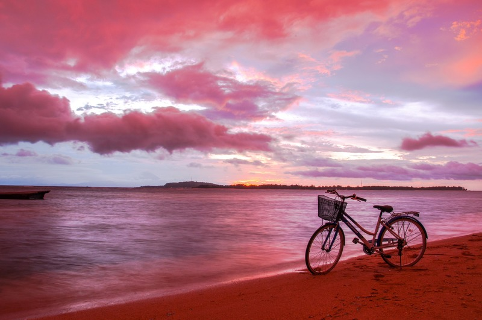

Persiapan Traveling ke Pink Beach Labuan Bajo
Menjelang akhir tahun biasanya kita sudah mulai mempersiapkan rencana liburan. Kebetulan banget tahun ini akan ada libur panjang di penghujung tahun. Dari libur natal dan tahun baru seperti biasanya, ditambah libur cuti bersama yang ditetapkan pemerintah. Wah, ini sih kesempatan emas buat traveling! Karena punya waktu yang lumayan banyak, kamu bisa pilih tempat berlibur yang agak jauh seperti ke Pink Beach Labuan Bajo.
Pink Beach Labuan Bajo terletak di Pulau Komodo, Flores Barat, Nusa Tenggara Timur. Seperti namanya, pantai ini memang memancarkan warna pink di sepanjang tepinya. Warna pink berasal dari hewan kecil yang bernama Foraminifera. Gimana caranya Foraminifera bikin warna pasir jadi pink?
Jadi, sebenarnya foraminifera termasuk hewan bersel satu yang memiliki ukuran sangat kecil. Hewan kecil ini membuat koral-koral di lautan menjadi berwarna kemerahan. Karena kuatnya arus laut, koral hancur menjadi serpihan. Kemudian golombang membawa serpihan itu sampai ke tepi pantai, deh. Jadi begitu asal-usul kenapa pasir di Pink Beach warnanya pink, menarik bukan?
Buat kamu yang tertarik menjadikan Pink Beach Labuan Bajo sebagai tujuan wisata, ada beberapa hal yang mesti kamu perhatikan agar berlibur di masa pandemi tetap aman.
Traveling di masa pandemi seperti sekarang memang agak beresiko. Oleh karena itu kamu harus punya persiapan ekstra agar bisa liburan namun tetap aman. Persiapan sebelum keberangkatan jadi kunci utama agar kamu bisa mengantisipasi resiko yang ada. Berikut tips persiapan traveling ke Pink Beach Labuan Bajo di masa pandemi Covid-19.
1. Mempersiapkan tubuh dalam kondisi sehatNamanya juga mau liburan jauh, kondisi tubuh harus prima dong. Dari jauh-jauh hari kamu harus mulai menjaga pola hidup agar tubuh kamu fit ketika hari H liburan tiba. Kamu bisa mulai dengan berjemur di bawah sinar matahari pagi. Nggak perlu lama-lama, cukup 10-15 menit aja. Setelah itu kamu bisa olahraga ringan di rumah biar fisikmu semakin kuat sehingga nggak gampang capek saat jalan-jalan.
Ada lagi nih satu hal yang penting, jaga pola makan! Menjaga asupan nutrisi yang masuk ke dalam tubuh harus lebih kamu perhatikan. Dengan mengonsumsi makanan yang bergizi, imun tubuh jadi lebih kuat menghadang segala penyakit. Kamu pasti nggak mau kan, ketika semua rencana liburan sudah dipersiapkan tapi kamu malah sakit. Jadi batal deh liburannya.
Ini nih, yang membedakan traveling di masa pandemi. Kamu wajib punya dokumen kesehatan yang menyatakan kamu bebas dari Covid-19! Berhubung tujuan wisata kita kali ini adalah Pink Beach Labuan Bajo, maka mau nggak mau kita harus naik pesawat untuk sampai ke sana. Nah, prosedur naik pesawat di masa pandemi seperti sekarang cukup ribet, lho.
Untuk penerbangan domestik kamu harus menunjukkan hasil negatif tes PCR atau non-reaktif rapid tes yang berlaku selama 14 hari. Atau bagi kamu yang tinggal di daerah yang nggak punya fasilitas tes PCR atau rapid, maka kamu bisa menunjukkan surat keterangan bebas dari influenza yang dikeluarkan rumah sakit atau puskesmas. Tapi untuk hal ini kamu mesti rajin cari info terbaru soalnya bisa aja syaratnya berubah sewaktu-waktu.
Meskipun lagi liburan kamu tetap harus mematuhi protokol kesehatan, lho. Wajib menggunakan masker dimanapun kamu berada! Oleh karena itu kamu mesti mempertimbangkan untuk membawa banyak stok masker. Kamu boleh menggunakan masker kain ataupun masker medis, tapi ingat masker kain harus diganti setiap 4 jam sekali sedangkan masker medis harus diganti 8 jam sekali. Makanya, membawa persediaan masker sangat penting agar kamu nggak repot mencari masker di tempat liburanmu nanti.
Selain itu, kamu harus membawa hand sanitizer. Kamu harus rajin membersihkan tangan karena tangan adalah bagian tubuh yang dihinggapi banyak kuman dan virus. Meskipun sekarang banyak tersedia tempat cuci tangan, namun belum tentu tempat wisata yang kamu tuju punya tempat mencuci tangan yang layak. Kalau sulit cari tempat cuci tangan, cara paling praktis ya pakai hand sanitizer.
Virus Covid-19 bisa menular melalui droplet sehingga bergantian alat makan akan sangat berbahaya. Saat berlibur, pasti kamu akan mencari tempat makan. Untuk makan pasti kamu butuh sendok, garpu, piring, dan gelas. Kamu bisa aja menggunakan alat makan yang sudah disediakan, tapi apa kamu yakin soal kebersihannya? Agar kamu bisa makan lebih nyaman dan bebas dari rasa was was, ada baiknya kamu makan pakai alat makan pribadi.
5. Pilih tempat wisata outdoorMemilih tempat wisata saat pandemi seperti sekarang juga nggak bisa sembarang. Tempat terbuka lebih direkomendasikan karena punya sirkulasi udara yang baik sehingga akan menurunkan resiko penularan. Makanya, mengunjungi Pink Beach Labuan Bajo adalah pilihan yang tepat. Namun udah jauh-jauh ke Labuan Bajo, kamu nggak mungkin kan cuma ke Pink Beach aja. Kamu bisa susun itinerary ke tempat wisata alam lainnya yang ada di Labuan Bajo. Namun ingat, pilih tempat wisata yang outdoor!
6. Pesan tempat menginap yang terjamin kebersihannyaCari tempat menginap memang kelihatannya mudah karena ada banyak platform pemesanan hotel via online. Namun kalau yang kita mau hotel yang punya jaminan kebersihan, carinya di mana? Kamu tenang aja, karena sekarang hotel RedDoorz sudah memiliki sertifikasi HygienePass. Sertifikasi HygienePass adalah hasil kerjasama RedDoorz dan Ikatan Ahli Kesehatan Masyarakat Indonesia (IAKMI). HygienePass menjamin hotel-hotel RedDoorz terjaga kebersihannya dan higienis, jadi kamu nggak perlu ragu buat menginap di RedDoorz!